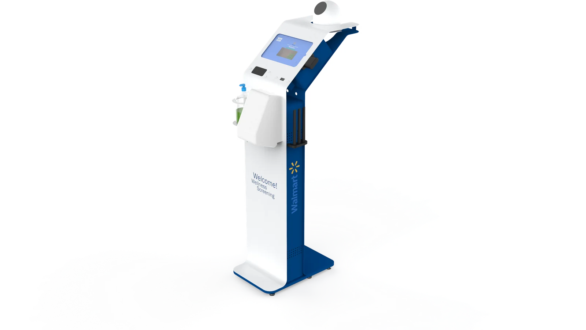
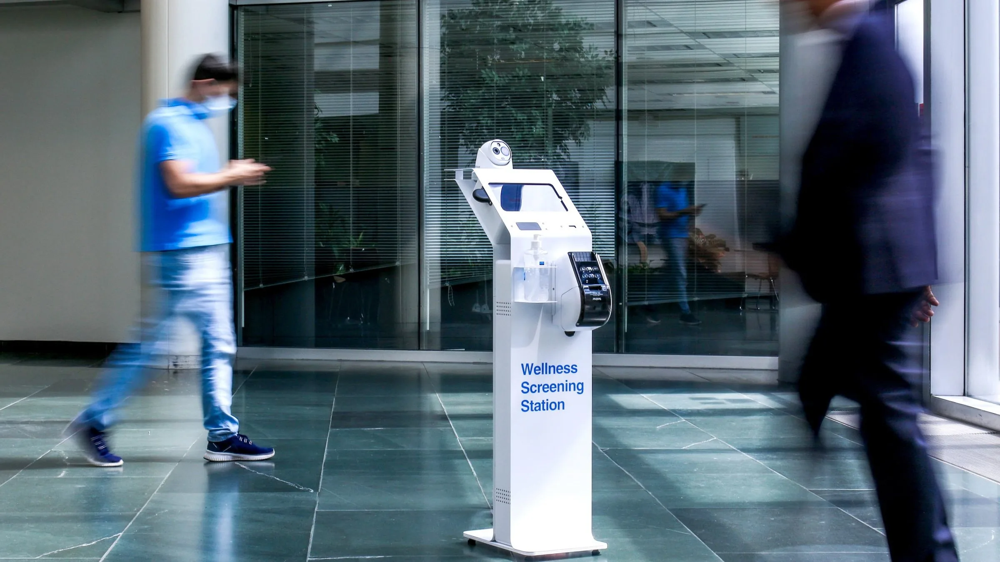
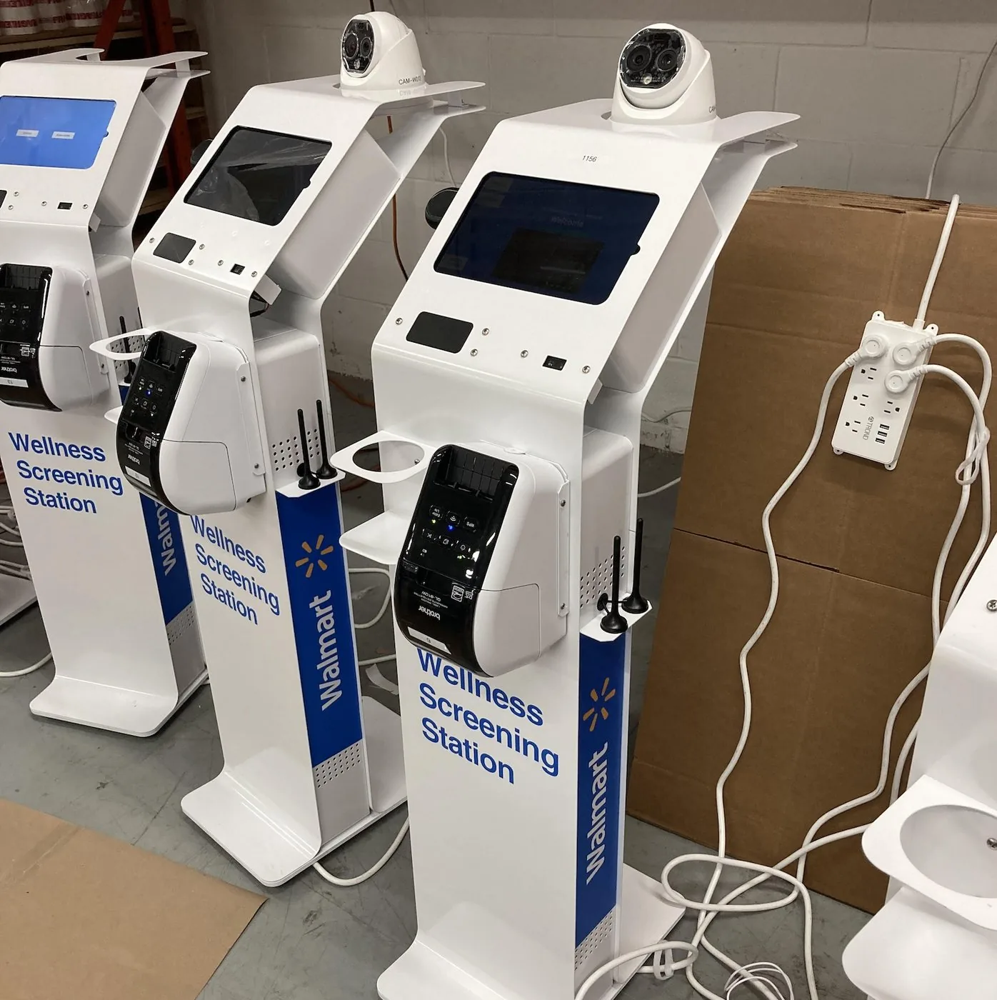
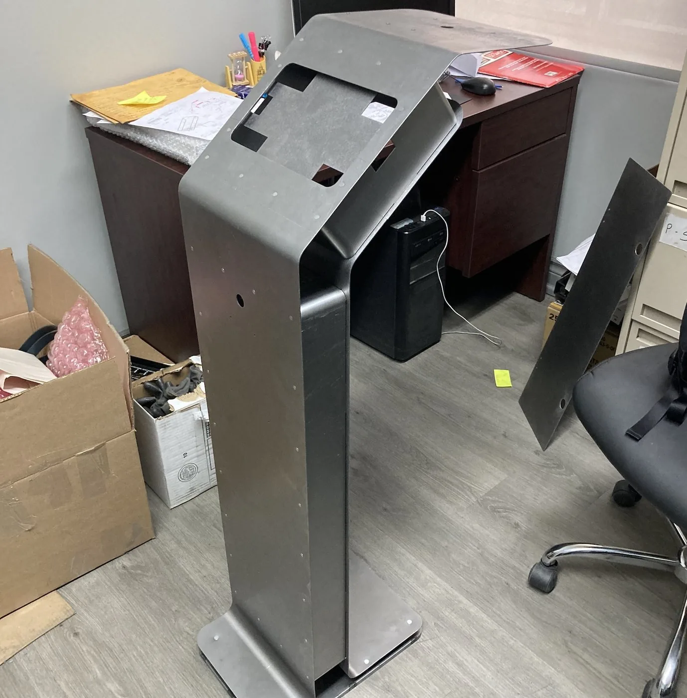

A checkup, at the front door.
Eaigle
The Wellness Screening Station gives Eaigle a self-serve kiosk for fast, contactless health checks at building entrances. We took it from concept generation and rendering through rapid prototyping, industrial design, and full mechanical layout, then managed vendor selection and pilot-production liaison.
The housing is powder-coated steel, built with sheet metal manufacturing for the durability needed at an entrance handling constant foot traffic. Deployed during COVID, the station screens each visitor with a temperature check, proof-of-vaccination scan, and mask detection before granting entry. The design goal throughout was to make something that read as confident and reassuring, not clinical or intimidating.


